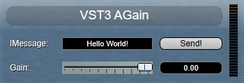
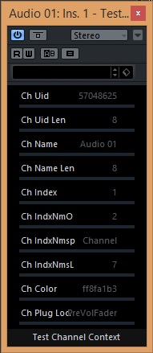
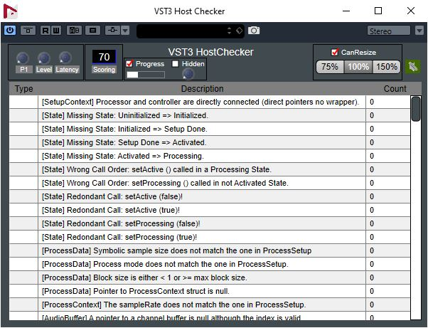
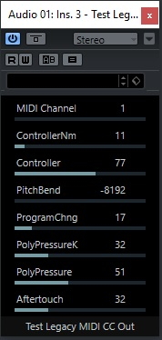
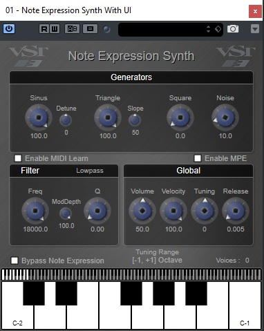
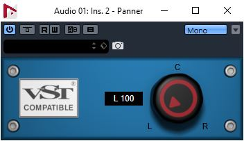
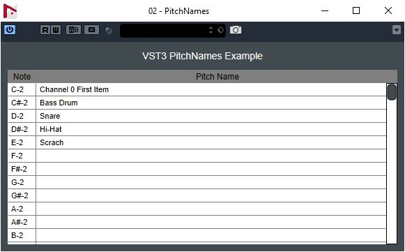
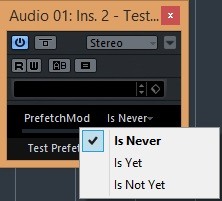
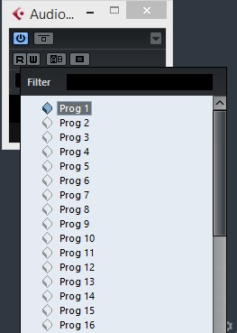

The SDK includes some plug-ins and host implementation examples.The Legendaries AGain and ADelay ADelay, thanks Paul Kellet the OpenSource mda Plug-ins, a basic Note Expression Synth supporting "Note Expression Event" and an example of pitchnames support plug-in (PitchNames) and more.
Note: They use cmake as project generator: cmakeUse
In order to add your own plug-ins check: addownplugs
ADelay
Very simple delay plug-in:
- only one parameter (a delay)
Check the folder public.sdk/samples/vst/adelay of the SDK!
Classes:
AGain
The SDK includes a AGain plug-in which is a very simple VST 3 plug-in. This Plug-in:
- is multichannel compatible
- supports bypass processing
- has an automated gain parameter
- has an Event input bus (allowing to use noteOn velocity to control the gain factor)
- has a VU peak meter
- uses the VSTGUI4 library
- a version of this plug-in with side-chaining is available (showing a plug-in using the same controller and different components)
- a AAX version is available
- a AUv3 version is available

Check the folder public.sdk/samples/vst/again of the SDK!
Classes:
TestChannelContext
Very simple plug-in:

Check the folder public.sdk/samples/vst/channelcontext of the SDK!
HostChecker
- Instrument, Panner and Fx plug-in checking the VST 3 support of a host.
- a AAX version is available

Check the folder public.sdk/samples/vst/hostchecker of the SDK!
TestLegacyMIDICCOut
Very simple plug-in:
- showing how to use LegacyMIDICCOutEvent which allow to generate MIDI CC as output event
- VST parameters change which create LegacyMIDICCOutEvent Event

Check the folder public.sdk/samples/vst/legacymidiccout of the SDK!
Classes:
mda Plug-ins
- Effects (stereo to stereo plug-ins):
- Ambience : Reverb
- Bandisto : Multi-band Distortion
- BeatBox : Drum Replacer
- Combo : Amp and Speaker Simulator
- DeEsser : High frequency Dynamics Processor
- Degrade : Sample quality reduction
- Delay : Simple stereo delay with feedback tone control
- Detune : Simple up/down pitch shifting thickener
- Dither : Range of dither types including noise shaping
- DubDelay : Delay with feedback saturation and time/pitch modulation
- Dynamics : Compressor / Limiter / Gate
- Image : Stereo image adjustment and M-S matrix
- Leslie : Rotary speaker simulator
- Limiter : Opto-electronic style limiter
- Loudness : Equal loudness contours for bass EQ and mix correction
- MultiBand : Multi-band compressor with M-S processing modes
- Overdrive : Soft distortion
- RePsycho! : Drum loop pitch changer
- RezFilter : Resonant filter with LFO and envelope follower
- RingMod : Simple Ring Modulator
- Round Panner: 3D panner
- Shepard : Continuously rising/falling tone generator
- SpecMeter : Stereo 13 Bands spectral Meter
- Splitter : Frequency / level crossover for setting up dynamic processing
- Stereo Simulator: Haas delay and comb filtering
- Sub-Bass Synthesizer: Several low frequency enhancement methods
- TalkBox : High resolution vocoder
- TestTone : Signal generator with pink and white noise, impulses and sweeps
- Thru-Zero Flanger : Classic tape-flanging simulation
- Tracker : Pitch tracking oscillator, or pitch tracking EQ
- Instruments (1 Event input, 1 stereo Audio output):
- DX10 : Sounds similar to the later Yamaha DX synths including the heavy bass but with a warmer, cleaner tone.
- EPiano : Simple EPiano
- JX10 : The plug-in is designed for high quality (lower aliasing than most soft synths) and low processor usage
- Piano : Not designed to be the best sounding piano in the world, but boasts extremely low CPU and memory usage.
Based on the OpenSource mda plug-ins (http://mda.smartelectronix.com/), this set of plug-ins demonstrates how wrap DSP code in a VST 3 plug-in.
Check the folder public.sdk/samples/vst/mda-vst3 of the SDK!
Classes:
Note Expression Synth
- Instrument plug-in supporting note expression events
- It shows how easy it is to use vstgui4
- a AUv3 version is available

Check the folder public.sdk/samples/vst/note_expression_synth of the SDK!
Classes:
Note Expression Text
- Plug-in visualizing the NoteExpression as Text
- It shows how easy it is to use vstgui4
Check the folder public.sdk/samples/vst/note_expression_text of the SDK!
Panner
- Simple panner plug-in showing how to support Panner category (mono to Stereo)
- It shows how easy it is to use vstgui4

Check the folder public.sdk/samples/vst/panner of the SDK!
Classes:
- PlugController
- PlugProcessor
PitchNames
- Instrument plug-in showing PitchNames support
- It shows how easy it is to use vstgui4

Check the folder public.sdk/samples/vst/pitchnames of the SDK!
Classes:
TestPrefetchableSupport
Very simple plug-in:

Check the folder public.sdk/samples/vst/prefetchablesupport of the SDK!
TestProgramChange
Very simple plug-in:
- showing how to support Program List
- using a generic UI

Check the folder public.sdk/samples/vst/programchange of the SDK!
Sync Delay
Very simple delay plug-in:
- showing how to support IProcessContextRequirements
Check the folder public.sdk/samples/vst/syncdelay of the SDK!